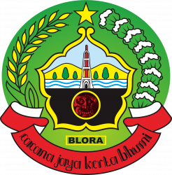

Welcome to
Saya adalah mahasiswa PPG Prajabatan Informatika yang berasal dari Kabupaten Blora, Jawa Tengah, sebuah daerah yang dikenal dengan kekayaan budaya, kesederhanaan masyarakat, serta suasana pedesaan yang penuh nilai gotong royong.
Ketertarikan saya untuk menjadi seorang guru muncul dari keinginan untuk memberikan manfaat bagi banyak orang melalui pendidikan. Saya percaya bahwa guru bukan hanya menyampaikan materi pembelajaran, tetapi juga menjadi sosok yang mampu membimbing, menginspirasi, dan membantu peserta didik menemukan potensi terbaik dalam dirinya.
Melalui perjalanan sebagai mahasiswa, saya terus belajar untuk menjadi guru yang profesional, kreatif, dan mampu mengikuti perkembangan zaman, khususnya dalam pemanfaatan teknologi dalam pembelajaran.
“Mengenal peserta didik dengan hati, mengajar dengan inovasi.”

Blora terkenal sebagai daerah penghasil kayu jati berkualitas tinggi. Banyak wilayahnya dikelilingi hutan jati milik Perhutani sehingga suasana alamnya khas dan masih asri.
Blora dikenal sebagai tempat kelahiran Pramoedya Ananta Toer, salah satu sastrawan terbesar Indonesia. Rumah dan kisah kehidupannya menjadi bagian penting sejarah sastra Indonesia.
Salah satu budaya paling khas adalah Barongan Blora, seni pertunjukan tradisional yang mirip singa barong dengan nuansa mistis, musik gamelan, dan atraksi budaya rakyat.
Universitas Muhammadiyah Surakarta merupakan Lembaga Pendidikan Tenaga Kependidikan (LPTK) yang berlokasi di Jl. A. Yani, Mendungan, Pabelan, Kec. Kartasura, Kabupaten Sukoharjo, Jawa Tengah 57169 yang berperan dalam membimbing mahasiswa menjadi calon pendidik profesional.
Praktik Pengalaman Lapangan Terbimbing (PPLT) dilaksanakan di SMP Muhammadiyah Program Khusus Kottabarat yang berlokasi di Jl. Pleret Raya Barat No.9, Banyuanyar, Kec. Banjarsari, Kota Surakarta, Jawa Tengah 57137, sebagai sarana mahasiswa untuk menerapkan ilmu dan keterampilan mengajar secara langsung di lingkungan pendidikan.